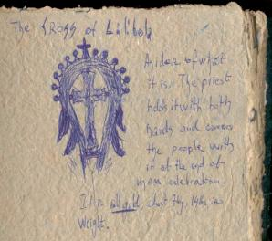
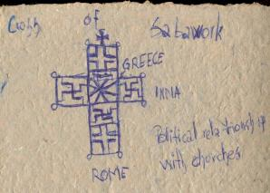
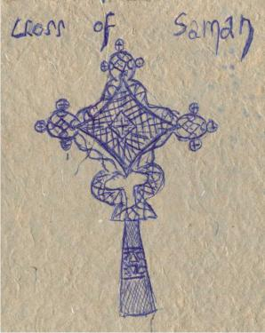
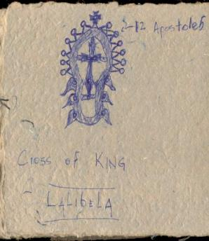
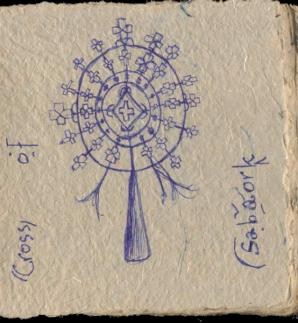

|
|
|
|
And we woke up at 5:30 or so, and we din't want to wake up at the suond of the alarm. So I proposed a Red Bull, one of those Red Bulls I had all the way from Zambia, recognizing the fact that this was an emergency, although it didn't seem like it at first. In fact, I had already seen ahead: if we would have slept, we would have missed the mass ceremony, but we would have regretted it, because we wouldn't have really gotten too much sleep as the noise outside was getting louder and louder. So I proposed a Red Bull.
|  |
|  |
|  |
|  |
|  |
And it got us up, if not for the caffeine it did just because we had to drink something and we were looking forward for the Red Bull taste.
We met Mark, the guide, on the street and had him take us at the seven Olive hotel, since, by now, Dan really had to take a crap. And he wanted to use some decent facilites. So he took us there reluctantly, as he wanted to go to start the tour so we could catch the mass ceremony. In the meanwhile we saw where they would have us camp. They showed us that we could camp on a safe little strip of grass. It looked appealing. We were thinking about camping there, maybe, but nobody was at the reception yet, so we thought we would come ask around lunch time.
Off we went for the Eastern Cluster of rock-hewn churces. We first had to buy the ticket. At the ticket office, Dan liked the sheppards stick of a local sheppard that was working at the ticket office, And he was about to buy it, but then thought about it again. He thoght about how he should wait until later, so he doesn't ahve to shlep it with him for the day.
Well, the churhces are marvellous. The first one we could only see from outisde at first. A huge monolith, a huge piece of stone in the form of a church. Covered by a steel roof, to rpotect from the water. We waited outside and waited for the mass to be over, so I started to draw the church. Then we went inside and Dan did some recording of the singing and taped some video. At the end of the ceremony there was a tradition that they did, and it was to caress the followers with the 7 kg golden cross, the Lalibela Cross. Dan aksed me if I was religous, because he was saying that I should go get crossed. I didn't want to get crossed, but I thought, or it seemes that he was going to get crossed, and he did. And as soon as he did, he was illuminated and finally understood the meaning for religion, but not consciously, or realisticly, more emotionally. He understood why people were going to church, and why or how it felt to believe in God. But he was so overwhelmed, that he did not want to talk about it. So we proceeded. I was trying to draw the cross, but it was very hard, because the priest would not be holding it still.
Lunch break. We decide to go check out another hotel, and move to it, since ours, the Kademnt, was not among the best ones. The Seven Olives seemed to be the solution, by pitching our tents there. This way we would pay only a few bucks a night and be able to use their great facilities. After bargaining the price down, we went to get our stuff from our old hotel. But on the way there, Dan said "Why don't we check out the Private Roha as well?" So I said "Sure, why not?" To tell you the truth, I was not interested in the Privare Roha. The idea of pitching my tent was so exciting, that I could not hope for anything better. But I didn't know what was going on in his mind. So we find it (it's kind of far down the hill in the centre of Town, according to Christmas, the kid that was our English translator there.) I must admit, the place did look cozy. You entered inside the gate, and would hit the bar/restaurant area. Then you could go out a door in the back, turn right, open a huge, sheat-metal door/gate, ascend a good 10 steps, and finally appear on this courtyeard of triangular shape, having rooms on all 3 sides. So basically the rooms were the fence of the place. At the one corner there were the steps, the other had showers, the last had the toilet.
Dan seemed to like it. No, he seemed to like it a lot. Actually, he liked it so much, he would have rather stayed here, than at the Seven Olives. He made a point that his tent being crappy, would let water in and he would much rather not use it, especially in areas were it's rain-season. I gave in, and agreed to stay there. It was not easy, and it didn't just come like that. Also because I got annoyed at the fact that Dan wanted to make a decision then and there, and I wanted to make the decision while we walked to get our stuff. Maybe I should have brought this up, because I don't think it would have affected things too much. At any rate, eventually the decision got made by itself as I was not taking action. I was trying to pivot on the price, so after Dan got the price to be accedptable (i.e. what we would have paid at the Seven Olives, 20birr each per night) I was asked for the money, and the commitment was made. So now I had decided if to bend my emeotions, or to split, at least only for the stay at Lalibela.
The problem was that Dan was right: The Private Roha hotel is a lot better than the Seven Olives. It's homier, the pople are more friendly, to get to it you need to walk down this hill, for like 500-600m, and it is pretty steep, through the mud of the village and the village people, the view of the room is on to the Eastern Cluster of rock-hewn churches, and, finally, the view of the crapper was on the other side of the valley: rooftop view of Lalibela. So I recognized this as being a spoiled behavior (that I preferred staying at Seven Olives) or maybe selfish or lazy, and I let it slide. And in fact it was perfectly all right.
Then we proceeded to the next set of churches and saw those, which were marvellous. It was very rainy, and the stone was wet and slippery all over.
It was great though. We smoked some more and went through this new set of churches, this time with noone around, and it was like being kids again and playing in an amazing playground. I mean, we are talking about huge, narrow tunnels, with nobody around, because it was afternoon and there were not many people there. Not many at all!
What a memorable experience. An Italian guy, Carlo Molina, I met yesterday said that the churches would not be astonishing, but I think, and I firmly do, that they are. I mean these churches were dug out of the stone, for crying out loud. And according to the legend, they were done in very little time as well!
At the end of this day, we contemplated the options. It turned out to be a good idea to stay another day in Lalibela, then see if we could fly from Aksum to Harar, then take the bus from Harar back to Addis. We had dinner at our hotel, took a shower (actually, Dan did, not me) a hot shower with water they boiled for us , had a little ganja and went to bed. Oh, yes, the ganja was possible because on our way back from the churches, Dan asked some kid for some Ganja, and the kid hooked us up with some real expensive shake: $5.95 for 8 small spliffs.
| Previous | Home | Next |
{kind=link}
{kind=link}
{kind=link}
{kind=link}
{kind=link}